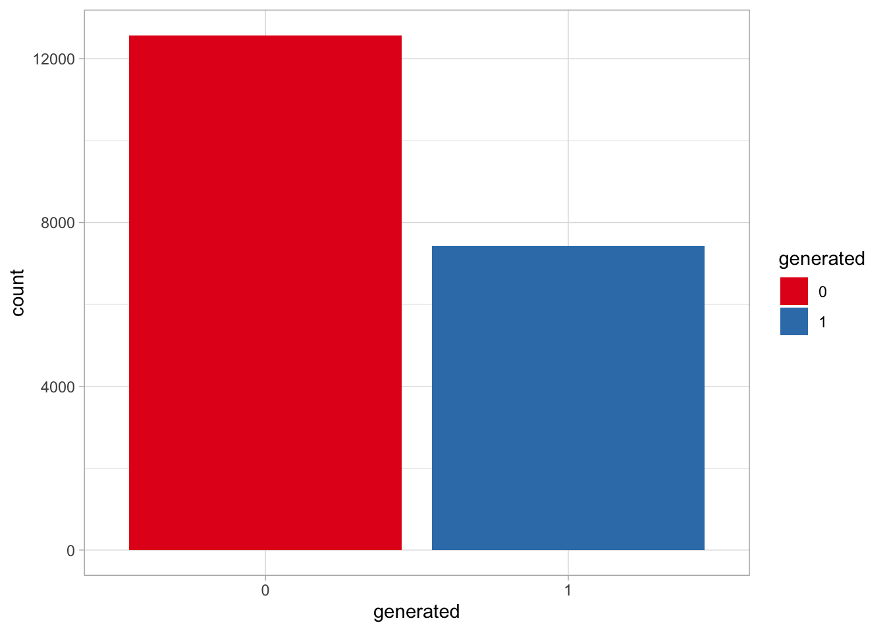
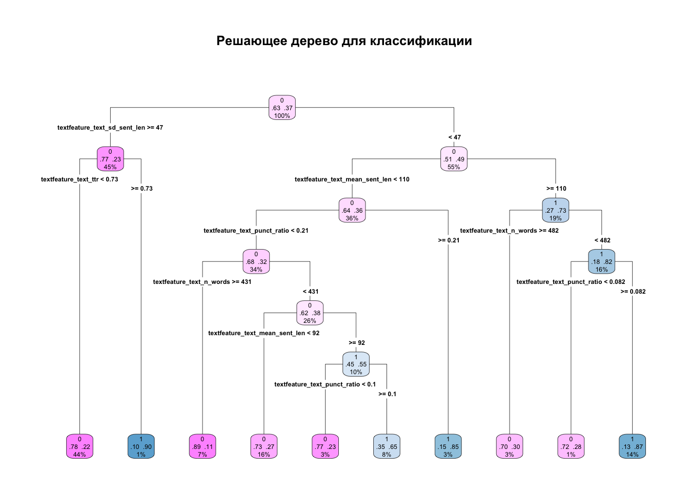
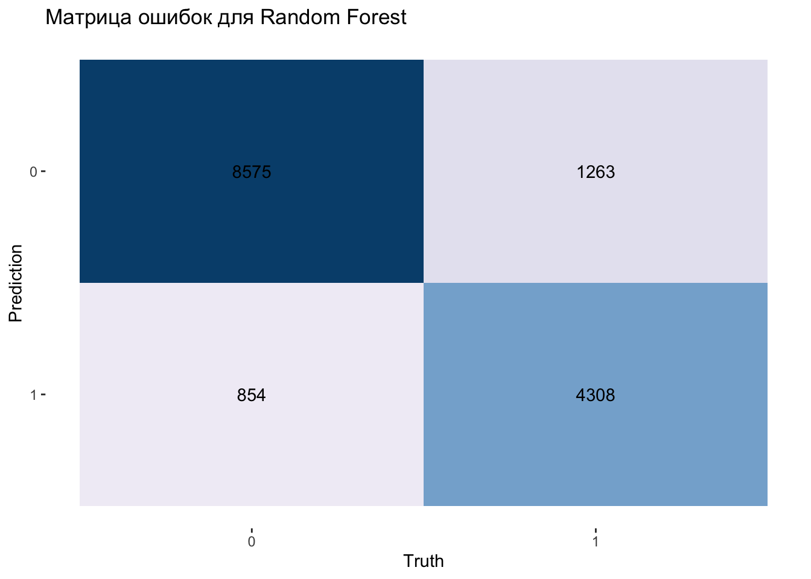
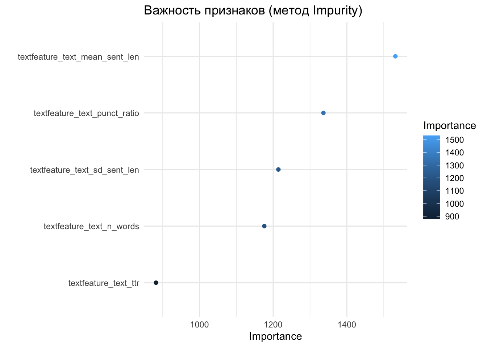
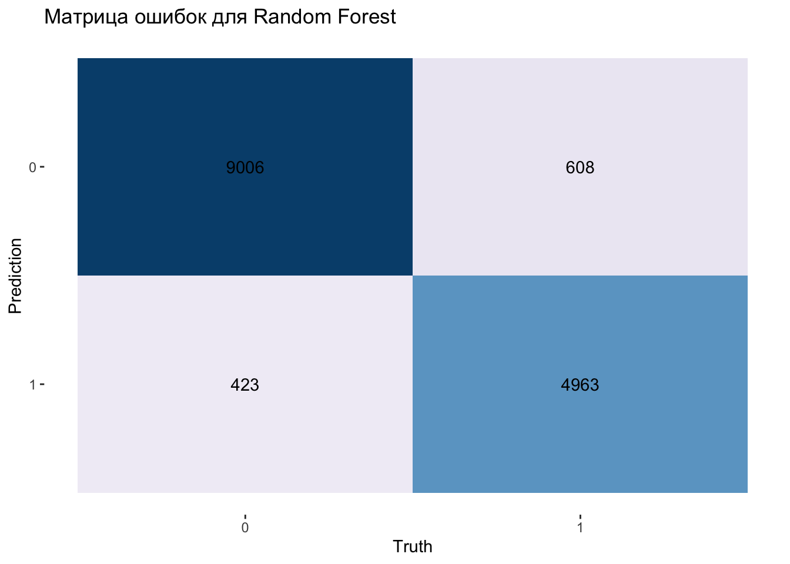
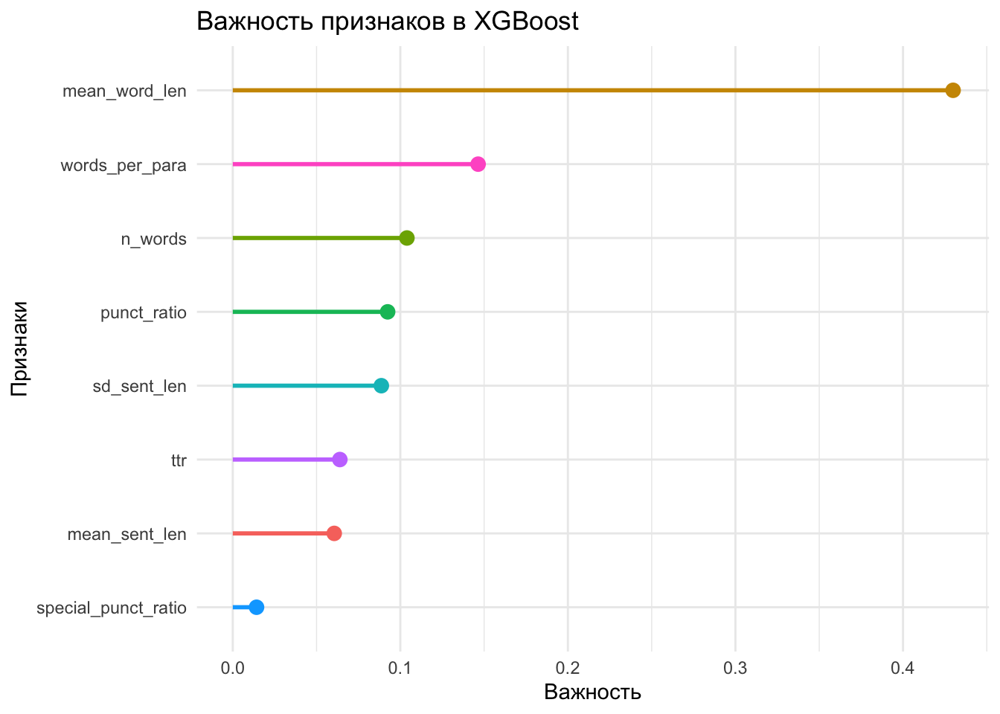
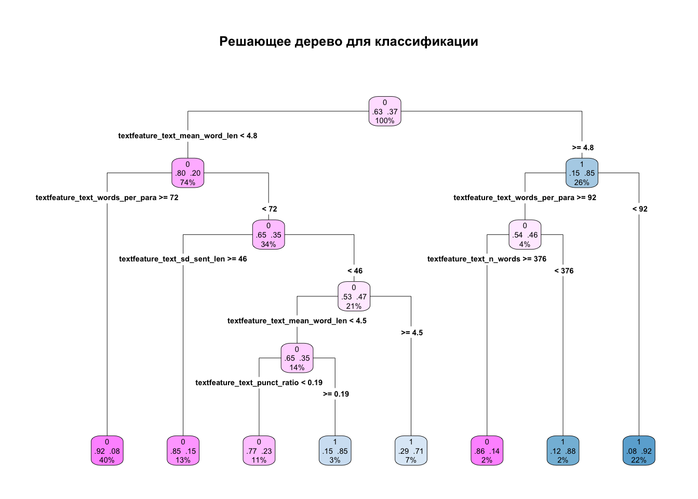

library(tidymodels)
library(tidyverse)
library(textrecipes)
library(tidytext)
library(rpart.plot)
library(vip)
library(future) # для параллельных вычислений26 Случайный лес 🌳
Также нам понадобятся пакеты {rpart}, {ranger} и {xgboost} (в качестве движков для моделей). Отдельно загружать их не надо.
26.1 Данные
set.seed(18042026)
texts <- read_csv("../files/AI_human.csv") |>
mutate(generated = as.factor(generated)) |>
sample_n(size = 20000)texts |>
ggplot(aes(generated, fill = generated)) +
geom_bar() +
scale_fill_brewer(palette = "Set1", type = "qual") +
theme_light()
Разбиваем наблюдения на обучающую и контрольную выборки.
set.seed(18042026)
texts_split <- initial_split(texts, strata = generated)
texts_train <- training(texts_split)
texts_test <- testing(texts_split)26.2 Препроцессинг
Перед обучением мы измеряем структурные особенности текстов, исходя из некоторых априорных предположений:
стандартное отклонение длины предложения: ИИ генерирует предложения примерно одинаковой длины и структуры, человек пишет более хаотично.
лексическое разнообразие: ИИ знает сотни тысяч слов и легко вставляет синонимы, редкие термины и литературные обороты; человек более предсказуем в выборе слов.
сложность синтаксиса: ИИ старается быть понятным, поэтому часто придерживается среднего размера предложений; человек склонен либо к чрезмерному упрощению (в чатах), либо к созданию сверхсложных конструкций, которые нейросети иногда “боятся” имитировать, чтобы не потерять логику.
плотность пунктуации: ИИ расставляет знаки препинания идеально по правилам; человек ошибается, злоупотребляет тире, ставит много восклицательных знаков или, наоборот, игнорирует запятые.
base_rec <- recipe(generated ~ text, data = texts_train) |>
step_textfeature(text, extract_functions = list(
# --- Статистика ---
n_words = function(x) stringr::str_count(x, "\\S+"),
mean_sent_len = function(x) {
purrr::map_dbl(x, ~ {
sents <- strsplit(.x, "[.!?]")[[1]]
if (length(sents) == 0) return(0)
mean(nchar(sents), na.rm = TRUE)
})
},
sd_sent_len = function(x) {
purrr::map_dbl(x, ~ {
sents <- strsplit(.x, "[.!?]")[[1]]
if (length(sents) < 2) return(0)
sd(nchar(sents), na.rm = TRUE)
})
},
# --- Пунктуация и стиль ---
punct_ratio = function(x) {
stringr::str_count(x, "[[:punct:]]") / stringr::str_count(x, "\\S+")
},
# --- Лексика ---
ttr = function(x) {
purrr::map_dbl(x, ~ {
words <- stringr::str_split(.x, "\\s+")[[1]]
words <- words[words != ""]
if (length(words) == 0) return(0)
length(unique(words)) / length(words)
})
}
))texts_baked <- base_rec |>
prep() |>
juice()glimpse(texts_baked)Rows: 15,000
Columns: 6
$ generated <fct> 0, 0, 0, 0, 0, 0, 0, 0, 0, 0, 0, 0, 0, …
$ textfeature_text_n_words <int> 331, 278, 248, 185, 213, 359, 639, 356,…
$ textfeature_text_mean_sent_len <dbl> 112.11765, 133.16667, 121.27273, 178.60…
$ textfeature_text_sd_sent_len <dbl> 63.45164, 96.19472, 35.40365, 69.41758,…
$ textfeature_text_punct_ratio <dbl> 0.13293051, 0.11151079, 0.13709677, 0.0…
$ textfeature_text_ttr <dbl> 0.4592145, 0.4712230, 0.6008065, 0.5081…26.3 Повторные выборки
texts_folds <- vfold_cv(texts_train, v = 10)26.4 Деревья решений 🌴
Деревья решений применяются как для задач регрессии, так и для задач классификации. В этом уроке мы разберем, как они работают в роли классификаторов.
Деревья классификации строят последовательное разбиение пространства признаков таким образом, чтобы максимизировать чистоту (однородность) классов в каждом из подмножеств. Для оценки качества разбиения вместо ошибки MSE обычно используют коэффициент Джини или энтропию. Для выбранного сегмента данных они рассчитываются так:
\[Entropy(S) = \sum_{i=1}^{c}-p_i log_2 (p_i)\] \[Gini(S) = 1 - \sum_{i=1}^{c} p_i^2\]
Вот тут очень простой пример (видео).
Данные делятся на группы, в которых целевая переменная (метка класса) распределена максимально предсказуемо. Каждое разбиение основывается на признаках, а в листьях дерева находится наиболее вероятный класс для соответствующей группы или вероятности принадлежности к классам.
Деревья легко визуализировать и интерпретировать, они отлично работают с категориальными данными без создания dummy-переменных. Они особенно эффективны, когда связь между признаками и классами нелинейная и сложная.
Чтобы дерево не росло бесконечно и не переобучалось, мы управляем его структурой с помощью гиперпараметров:
cost_complexity(штраф за сложность): Этот параметр отвечает за «обрезку» (pruning) дерева. Чем меньше значение, тем более ветвистым и глубоким будет дерево. Если оставить его стандартным (0.01), алгоритм может отсечь важные, но менее явные признаки.min_n(минимальное количество наблюдений): Задает минимальное число строк данных, которое должно находиться в узле, чтобы его можно было делить дальше. Мы снизили его до 5, чтобы дерево могло выделять даже небольшие специфические группы объектов.
# создаем спецификацию одиночного дерева
tree_spec <- decision_tree(cost_complexity = 0.01) |>
set_engine("rpart") |>
set_mode("classification")
# быстро обучаем на тренировочных данных
tree_fit <- workflow() |>
add_recipe(base_rec) |>
add_model(tree_spec) |>
fit(data = training(texts_split))
# визуализируем
tree_fit |>
extract_fit_engine() |>
rpart.plot(roundint = FALSE,
type = 4,
extra = 104,
box.palette = "PuBu",
main = "Решающее дерево для классификации")
Обратите внимание, что на графике в каждом узле теперь отображается три числа: предсказанный класс, вероятности классов и процент наблюдений, попавших в этот узел. Чтобы собрать метрики, подгоняем на созданных ранее фолдах. Для ускорения применяем параллельные вычисления. (Можете игнорировать предупреждения).
plan(multisession, workers = parallel::detectCores(logical = FALSE))
tree_rs <- workflow() |>
add_recipe(base_rec) |>
add_model(tree_spec) |>
fit_resamples(resamples = texts_folds)
plan(sequential)# собираем средние показатели метрик
collect_metrics(tree_rs) |>
gt::gt()| .metric | .estimator | mean | n | std_err | .config |
|---|---|---|---|---|---|
| accuracy | binary | 0.7721333 | 10 | 0.004421943 | Preprocessor1_Model1 |
| brier_class | binary | 0.1698123 | 10 | 0.003007970 | Preprocessor1_Model1 |
| roc_auc | binary | 0.7632464 | 10 | 0.008952629 | Preprocessor1_Model1 |
Точность лишь немного лучше случайного угадывания, сравним:
texts_train |>
count(generated) |>
mutate(proportion = n / sum(n),
percent = proportion * 100) |>
gt::gt()| generated | n | proportion | percent |
|---|---|---|---|
| 0 | 9429 | 0.6286 | 62.86 |
| 1 | 5571 | 0.3714 | 37.14 |
Попробуем улучшить результат.
26.5 Бэггинг, случайный лес, бустинг
Одиночные деревья склонны к переобучению и обладают высокой дисперсией: небольшое изменение в обучающих данных может привести к построению совсем другой структуры дерева.
Чтобы повысить точность и стабильность классификации, используют ансамблевые методы: бэггинг, случайный лес и бустинг.
- Бэггинг (сокр. от Bootstrap Aggregating) — это способ собрать «консилиум» из моделей. Работает он так:
- Случайные группы (бутстрэп): мы берем наш исходный список данных и много раз вытягиваем из него случайные подмножества. Важно: мы выбираем именно наблюдения (строки). Один и тот же текст может попасть в одну подвыборку несколько раз, а в другую — ни разу.
- Обучение: на каждом таком случайном наборе мы учим отдельное дерево.
- Голосование (агрегация): когда нужно классифицировать новый объект, мы спрашиваем каждое дерево: “Это какой класс?”. В итоге побеждает тот вариант, за который проголосовало большинство.
Зачем это нужно? Одно дерево может “зациклиться” на случайных деталях, а среднее мнение толпы (ансамбля) обычно гораздо ближе к истине.
- Случайный лес — это бэггинг «в квадрате».
К случайному выбору наблюдений (строк) добавляется случайный выбор признаков (колонок). Это заставляет деревья искать разные закономерности и не дает им всем совершать одну и ту же ошибку. Например, если в данных есть один супер-сильный признак, обычный бэггинг построит все деревья вокруг него, и они будут одинаковыми. Случайный выбор колонок (признаков) заставляет модель смотреть на данные под разными углами.
- Бустинг — это «работа над ошибками».
Здесь деревья строятся по очереди. Первое дерево пытается классифицировать данные как может. Второе дерево внимательно смотрит на те наблюдения (строки), где первое дерево ошиблось, и пытается исправить именно их. Третье исправляет ошибки первых двух. Так модель постепенно «вытягивает» самые сложные случаи.
26.6 Random Forest
Уточним, какие движки доступны для случайных лесов.
show_engines("rand_forest")Создадим спецификацию модели. Деревья используются как в задачах классификации, так и в задачах регрессии, поэтому задействуем функцию set_mode().
rf_spec <- rand_forest(trees = 100) |>
set_engine("ranger", importance = "impurity") |>
set_mode("classification")В контексте деревьев решений impurity — это показатель хаоса в узле дерева: чистый узел содержит объекты только одного класса, грязный узел содержит смесь классов в равных пропорциях. Когда мы указываем importance = "impurity", алгоритм ranger будет подсчитывать, насколько сильно каждый признак снижает этот хаос при каждом разбиении.
rf_wflow <- workflow() |>
add_model(rf_spec) |>
add_recipe(base_rec)
rf_wflow══ Workflow ════════════════════════════════════════════════════════════════════
Preprocessor: Recipe
Model: rand_forest()
── Preprocessor ────────────────────────────────────────────────────────────────
1 Recipe Step
• step_textfeature()
── Model ───────────────────────────────────────────────────────────────────────
Random Forest Model Specification (classification)
Main Arguments:
trees = 100
Engine-Specific Arguments:
importance = impurity
Computational engine: ranger Обучение у меня заняло примерно минуту.
plan(multisession, workers = parallel::detectCores(logical = FALSE))
tictoc::tic()
rf_rs <- fit_resamples(
rf_wflow,
texts_folds,
control = control_resamples(save_pred = TRUE)
)
tictoc::toc()
plan(sequential)collect_metrics(rf_rs) |>
gt::gt()| .metric | .estimator | mean | n | std_err | .config |
|---|---|---|---|---|---|
| accuracy | binary | 0.8588667 | 10 | 0.003275121 | Preprocessor1_Model1 |
| brier_class | binary | 0.1030375 | 10 | 0.001728327 | Preprocessor1_Model1 |
| roc_auc | binary | 0.9272299 | 10 | 0.002577648 | Preprocessor1_Model1 |
rf_rs |>
collect_predictions() |>
conf_mat(truth = generated, estimate = .pred_class) |>
autoplot(type = "heatmap") +
scale_fill_distiller(palette = "PuBu", direction = 1) +
labs(title = "Матрица ошибок для Random Forest")
26.7 Подгонка и важнейшие признаки
rf_fit <- fit(rf_wflow, data = texts_train)rf_fit |>
extract_fit_parsnip() |>
vip(num_features = 15, geom = "point") +
aes(color = Importance) +
theme_minimal() +
labs(title = "Важность признаков (метод Impurity)")
26.8 Доработка рецепта
Добавим еще три признака:
средняя длина слова: ИИ склонны выбирать длинные, книжные слова и термины;
экспрессия: считаем восклицательные знаки и многоточия — то, что передает чувства;
плотность абзацев: ИИ генерирует аккуратные, логически завершенные абзацы примерно одинакового размера.
new_rec <- recipe(generated ~ text, data = texts_train) |>
step_textfeature(text, extract_functions = list(
# --- Статистика ---
n_words = function(x) stringr::str_count(x, "\\S+"),
mean_sent_len = function(x) {
purrr::map_dbl(x, ~ {
sents <- strsplit(.x, "[.!?]")[[1]]
if (length(sents) == 0) return(0)
mean(nchar(sents), na.rm = TRUE)
})
},
sd_sent_len = function(x) {
purrr::map_dbl(x, ~ {
sents <- strsplit(.x, "[.!?]")[[1]]
if (length(sents) < 2) return(0)
sd(nchar(sents), na.rm = TRUE)
})
},
# --- Пунктуация и стиль ---
punct_ratio = function(x) {
stringr::str_count(x, "[[:punct:]]") / stringr::str_count(x, "\\S+")
},
# --- Лексика ---
ttr = function(x) {
purrr::map_dbl(x, ~ {
words <- stringr::str_split(.x, "\\s+")[[1]]
words <- words[words != ""]
if (length(words) == 0) return(0)
length(unique(words)) / length(words)
})
},
# ---Средняя длина слов ---
mean_word_len = function(x) {
purrr::map_dbl(x, ~ {
words <- stringr::str_extract_all(.x, "[[:alnum:]]+")[[1]]
if (length(words) == 0) return(0)
mean(nchar(words))
})
},
# --- Экспрессия ---
special_punct_ratio = function(x) {
(stringr::str_count(x, "!") + stringr::str_count(x, "\\.\\.\\.")) /
stringr::str_count(x, "\\S+")
},
# --- Количество слов на один абзац ---
words_per_para = function(x) {
purrr::map_dbl(x, ~ {
paras <- stringr::str_split(.x, "\n+")[[1]]
paras <- paras[nchar(paras) > 0]
words <- stringr::str_count(.x, "\\S+")
if (length(paras) == 0) return(0)
words / length(paras)
})
}
))Идея на будущее: можно посчитать стоп-слова, а также части речи (ИИ более “номинален”).
26.9 Градиентные бустинговые деревья
Также попробуем построить регрессию с использованием градиентных бустинговых деревьев.
xgb_spec <-
boost_tree(mtry = 50, trees = 100) |>
set_engine("xgboost") |>
set_mode("classification")xgb_wflow <- workflow() |>
add_model(xgb_spec) |>
add_recipe(new_rec)
xgb_wflow══ Workflow ════════════════════════════════════════════════════════════════════
Preprocessor: Recipe
Model: boost_tree()
── Preprocessor ────────────────────────────────────────────────────────────────
1 Recipe Step
• step_textfeature()
── Model ───────────────────────────────────────────────────────────────────────
Boosted Tree Model Specification (classification)
Main Arguments:
mtry = 50
trees = 100
Computational engine: xgboost Придется снова подождать.
plan(multisession, workers = parallel::detectCores(logical = FALSE))
tictoc::tic()
xgb_rs <- fit_resamples(
xgb_wflow,
texts_folds,
control = control_resamples(save_pred = TRUE)
)
tictoc::toc()
plan(sequential)save(xgb_rs, file = "../data/xgb_rs.Rdata")collect_metrics(xgb_rs) |>
gt::gt()| .metric | .estimator | mean | n | std_err | .config |
|---|---|---|---|---|---|
| accuracy | binary | 0.93126667 | 10 | 0.0017538670 | Preprocessor1_Model1 |
| brier_class | binary | 0.05097827 | 10 | 0.0011076966 | Preprocessor1_Model1 |
| roc_auc | binary | 0.97915545 | 10 | 0.0009558681 | Preprocessor1_Model1 |
xgb_rs |>
collect_predictions() |>
conf_mat(truth = generated, estimate = .pred_class) |>
autoplot(type = "heatmap") +
scale_fill_distiller(palette = "PuBu", direction = 1) +
labs(title = "Матрица ошибок для Random Forest")
Кажется, мы построили неплохой классификатор для сгенерированного контента!
26.10 Важность признаков
# обучаем модель
xgb_fit <- workflow() |>
add_recipe(new_rec) |>
add_model(xgb_spec) |>
last_fit(split = texts_split)# извлекаем важность признаков
xgb_fit |>
extract_fit_parsnip() |>
vi() |>
mutate(Variable = str_remove(Variable, "textfeature_text_")) |>
ggplot(aes(reorder(Variable, Importance), Importance, color = Variable)) +
geom_point(size = 3, show.legend = FALSE) +
geom_segment(aes(xend = reorder(Variable, Importance), yend = 0),
linewidth = 1, show.legend = FALSE) +
theme_minimal() +
coord_flip() +
labs(title = "Важность признаков в XGBoost",
x = "Признаки",
y = "Важность") 
26.11 Снова дерево… 🌲
# создаем спецификацию одиночного дерева
tree_spec <- decision_tree(cost_complexity = 0.01) |>
set_engine("rpart") |>
set_mode("classification")
# быстро обучаем на тренировочных данных
tree_fit <- workflow() |>
add_recipe(new_rec) |>
add_model(tree_spec) |>
fit(data = training(texts_split))
# визуализируем
tree_fit |>
extract_fit_engine() |>
rpart.plot(roundint = FALSE,
type = 4,
extra = 104,
box.palette = "PuBu",
main = "Решающее дерево для классификации")